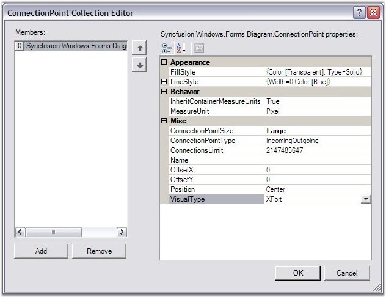
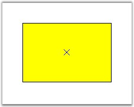
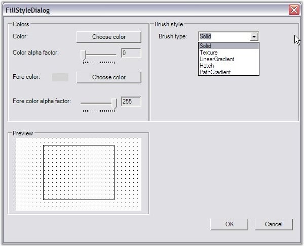
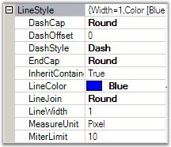
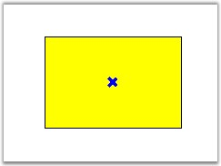
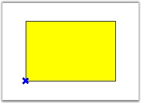
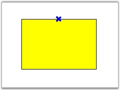
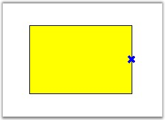
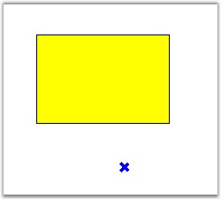

ConnectionPoint class provides points to connect to other nodes using a connector. It is available in different custom appearance and in different sizes.
The ConnectionPointType and ConnectionsLimit properties are available for the ports to define their nature.
|
Property |
Description |
|
ConnectionPointType |
Specifies the type of connection to be used. The values included are as follows:
· IncomingOutgoing (default) · Outgoing · Incoming |
|
ConnectionsLimit |
Specifies the number of connections to be allowed. Default value is 10. |
The following code snippet demonstrates their usage.
|
[C#]
Syncfusion.Windows.Forms.Diagram.ConnectionPoint cp = new Syncfusion.Windows.Forms.Diagram.ConnectionPoint(); cp.ConnectionPointType = ConnectionPointType.Incoming; cp.ConnectionsLimit = 12; |
|
[VB]
Dim cp As New Syncfusion.Windows.Forms.Diagram.ConnectionPoint() cp.ConnectionPointType = ConnectionPointType.Incoming cp.ConnectionsLimit = 12 |

Figure 71: ConnectionPoint Collection Editor
Sample diagram is as follows:

Figure 72: Rectangle with ConnectionPoint
Some important properties are discussed below:
FillStyle
FillStyle property is used to create brushes for filling the interior region of the Connection Points.
|
[C#]
FillStyle m_styleFill = new FillStyle(); m_styleFill.Color = Color.Transparent; m_styleFill.Type = FillStyleType.Solid; m_styleFill.ColorAlphaFactor = 60; |
|
[VB]
Dim m_styleFill As New FillStyle() m_styleFill.Color = Color.Transparent m_styleFill.Type = FillStyleType.Solid m_styleFill.ColorAlphaFactor = 60 |
The following image illustrates the above settings.

Figure 73: FillStyle Dialog Box
LineStyle
This property inturn has customization properties to set the style for the Connection Point Lines, similar to the other line types.

Figure 74: Line Style
|
[C#]
m_styleLine = new LineStyle(); m_styleLine.LineColor = Color.Blue; m_styleLine.LineWidth = 0; m_styleLine.DashStyle = DashStyle.Dash; |
|
[VB]
m_styleLine = New LineStyle() m_styleLine.LineColor = Color.Blue m_styleLine.LineWidth = 0 m_styleLine.DashStyle = DashStyle.Dash |
The below images illustrates the above settings.

Figure 75: Customized Connection Point
ConnectionPointSize
This property allows us to set the size of the Ports for current ConnectionPoint. This property accepts a ConnectionPointSize enumerator which has three predefined sizes as follows.
Large(12 * 12), Medium (9 *9) & Small (6 * 6).
Position
The point at which the connection should be established can be easily customized by setting the Position property to one of the options. This automatically associates the link to the desired position. Offset values can be specified through OffsetX and OffsetY properties, which will be inherited when the Position is set to Custom.
|
Properties |
Description |
|
OffsetX |
Specifies the position which takes the x value of the node. It positions the link with respect to the x value of the node. |
|
OffsetY |
Specifies the Y offset value where the link should be aligned. It positions the link with respect to the Y value of the node. |
|
Position |
Specifies the position where the links should be connected to the node. Default value is Center. The options included are as follows:
· Center · TopLeft · TopCenter · TopRight · MiddleLeft · MiddleRight · BottomLeft · BottomCenter · BottomRight · Custom |
The following code snippet defines the setting of the
position values for a node's port.
|
[C#]
Syncfusion.Windows.Forms.Diagram.ConnectionPoint cp = new Syncfusion.Windows.Forms.Diagram.ConnectionPoint(); cp.Position = Position.BottomLeft; cp.OffsetX = 50; cp.OffsetY = 10; |
|
[VB]
Dim cp As New Syncfusion.Windows.Forms.Diagram.ConnectionPoint() cp.Position = Position.BottomLeft cp.OffsetX = 50 cp.OffsetY = 10 |
Sample diagram is as follows,

Figure 76: BottomLeft ConnectionPoint

Figure 77: TopCenter ConnectionPoint

Figure 78: MiddleRight ConnectionPoint

Figure 79: ConnectionPoint in Specified X & Y Offset